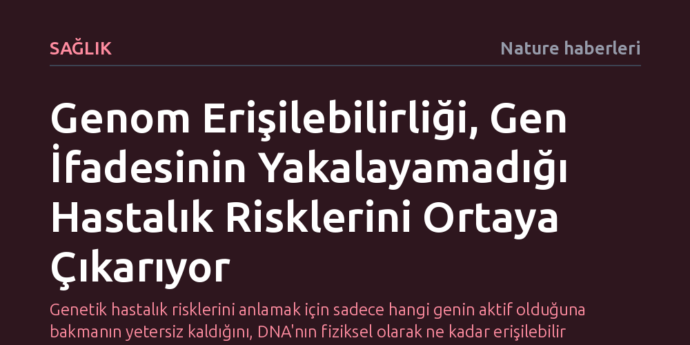

SAGLIK · Nature haberleri · 2026-10-08
Bağışıklık hücrelerinde kromatin erişilebilirliğini haritalayan yeni çoklu omik atlası, yalnızca gen ifadesine bakılarak tespit edilemeyen genetik hastalık risklerini açığa çıkarıyor. Bulgular, düzenleyici genom bölgelerinin doğrudan incelenmesinin hastalıklara yatkınlığı anlamada belirleyici olduğunu gösteriyor.
Genetik hastalık risklerini anlamak için sadece hangi genin aktif olduğuna bakmanın yetersiz kaldığını, DNA'nın fiziksel olarak ne kadar erişilebilir olduğunun da incelenmesi gerektiğini ortaya koyuyor.

Genetik biliminde uzun yıllar boyunca hastalık risklerini aydınlatmanın temel yolu, belirli DNA varyasyonlarının genlerin çalışma hızını, yani gen ifadesini nasıl etkilediğini incelemek oldu. Araştırmacılar, hastalıklara yol açan mekanizmaların çoğunlukla hücredeki haberci RNA (mRNA) üretimindeki artış veya azalışla açıklanabileceğini varsaydı. Ancak yürütülen kapsamlı ilişkilendirme çalışmaları, hastalıklarla güçlü bağları bulunan pek çok genetik varyantın hücredeki gen ifadesi düzeylerinde görünür bir değişiklik yaratmadığını ortaya koydu. Bu durum, genetik risklerin önemli bir kısmının mevcut ölçüm yöntemlerinin radarından kaçmasına neden oldu.
Yeni yayımlanan bulgular, bu kör noktanın nedenini ve çözümünü net bir şekilde gözler önüne seriyor. Hücrede üretilen son ürün olan RNA moleküllerini saymak yerine, genetik materyalin fiziksel mimarisine odaklanmak gerekiyor. Araştırma, bağışıklık hücrelerindeki kromatin erişilebilirliğinin doğrudan incelenmesinin, geleneksel gen ifadesi analizlerinin bütünüyle ıskaladığı kritik hastalık mekanizmalarını yakalayabildiğini gösteriyor.
Araştırma ekibi, tekil hücre düzeyinde çalışan modern çoklu omik teknolojilerinden yararlanarak geniş bir popülasyon ölçeğinde bağışıklık atlası inşa etti. Bu yaklaşım kapsamında, binlerce bireye ait farklı bağışıklık hücresi tiplerinde hem gen ifadesi hem de kromatin erişilebilirliği eş zamanlı olarak haritalandı. DNA zincirinin hangi bölgelerinin transkripsiyon faktörleri ve düzenleyici proteinler için fiziksel olarak açık, hangi bölgelerinin ise sıkıca paketlenip kapalı kaldığı hücre tipine özgü biçimde belirlendi.
Elde edilen veriler, kromatin erişilebilirliğini değiştiren genetik varyantların, hücresel düzenleme ağlarının en erken basamaklarını doğrudan kontrol ettiğini kanıtladı. Bir genetik varyant, sabit durumdaki nihai gen ifadesi seviyesini doğrudan değiştirmese bile, DNA'nın o bölgesini transkripsiyon faktörlerinin bağlanmasına hazır hale getirerek ya da kapatıp erişimi engelleyerek hücresel yanıt potansiyelini derinden etkileyebiliyor. Bu sayede, bağışıklık hücrelerinin uyarılma anında vereceği tepkiyi belirleyen gizli mekanizmalar somut olarak haritalandırıldı.
Bu keşif, özellikle otoimmün rahatsızlıklar, kronik iltihaplanmalar ve enfeksiyon hastalıkları gibi bağışıklık sistemi kökenli bozuklukların altında yatan genetik temellerin yeniden tanımlanmasını sağlıyor. Şimdiye dek işlevi anlaşılamayan ve işlevsiz olarak değerlendirilen pek çok kodlamayan DNA bölgesinin, aslında doğrudan hücre erişilebilirliğini yöneten kilit şalterler olduğu anlaşılıyor. Bu durum, genetik varyantların hastalıklara nasıl yatkınlık oluşturduğunu açıklayan sebep-sonuç zincirini tamamlıyor.
Klinik açıdan bakıldığında, düzenleyici genom mimarisinin anlaşılması hedefe yönelik yeni ilaçların geliştirilmesinde yepyeni kapılar aralıyor. Bir hastalığı tedavi etmek veya önlemek için yalnızca aşırı ya da yetersiz üretilen proteinleri hedeflemek yerine, kromatin seviyesindeki erişilebilirlik düğümlerine müdahale etmek mümkün hale gelebilir. Bireylerin genetik risk profilleri artık salt gen ifadesiyle değil, hücresel genom erişilebilirliği haritalarıyla çok daha yüksek doğrulukla öngörülebilir.
Genom erişilebilirliğinin sunduğu bu güçlü tabloya rağmen, insan sağlığının karmaşık yapısı tek başına statik DNA haritalarıyla açıklanamaz. Bireyin yaşam boyu karşılaştığı tüm çevresel unsurları, beslenmeyi, toksinleri ve stres faktörlerini kapsayan ekspozom, bu hücresel erişilebilirlik durumunu dinamik olarak değiştirebilmektedir. Genetik yatkınlığın epigenetik ve çevresel faktörlerle nasıl etkileşime girdiğini modellemek, araştırmacıların önündeki en büyük sınavlardan biridir.
Ayrıca mevcut atlas bağışıklık hücreleri üzerinde odaklanmış olsa da benzer mekanizmaların nörolojik, kardiyovasküler veya metabolik dokularda nasıl işlediği henüz tam olarak bilinmiyor. Farklı etnik kökenleri ve çeşitli doku tiplerini kapsayacak daha geniş ölçekli popülasyon çalışmalarına duyulan ihtiyaç sürüyor. Yine de kromatin erişilebilirliğinin hastalık risklerini aydınlatmadaki rolü, genetik biliminde yeni bir sayfa açmış durumda.